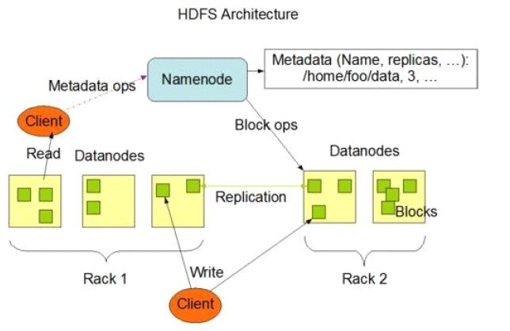
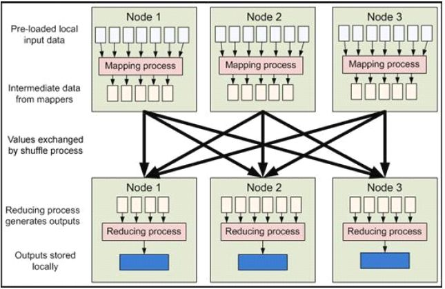
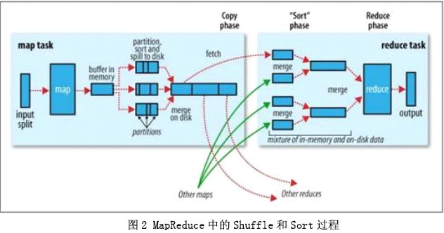
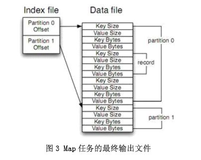
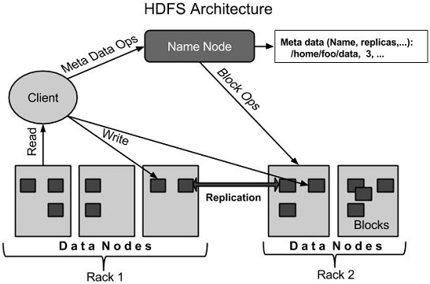
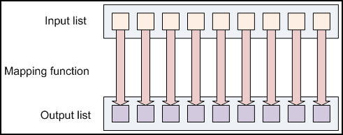
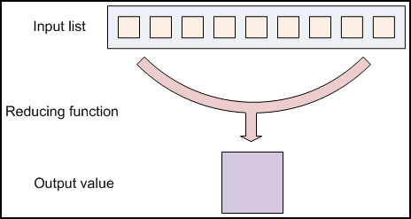
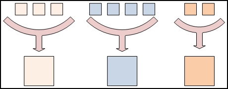
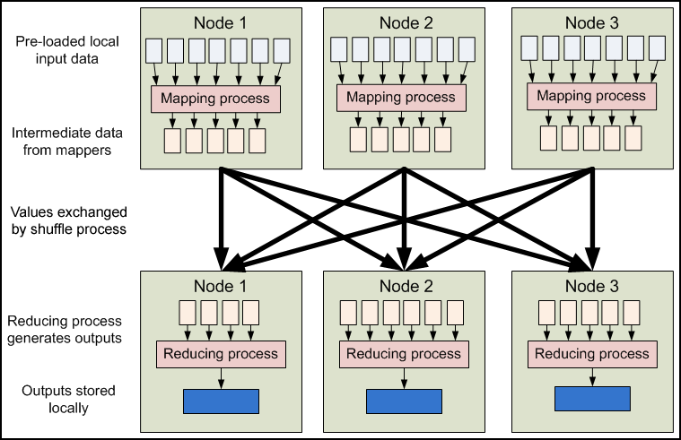
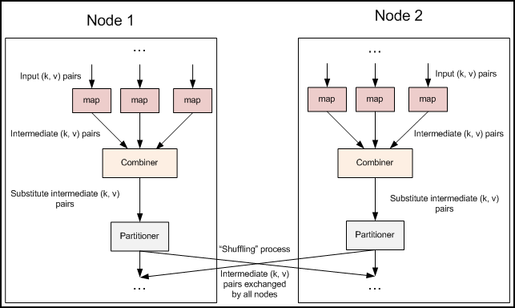

Hadoop 指南
概述
Hadoop Map/Reduce 是一个使用简易的软件框架，基于它写出来的应用程序能够运行在由上千个商用机器组成的大型集群上，并以一种可靠容错的方式并行处理上T级别的数据集。
一个 Map/Reduce 作业（job） 通常会把输入的数据集切分为若干独立的数据块，由 map 任务（task）以完全并行的方式处理它们。框架会对 map 的输出先进行排序， 然后把结果输入给 reduce 任务。通常作业的输入和输出都会被存储在文件系统中。 整个框架负责任务的调度和监控，以及重新执行已经失败的任务。
通常，Map/Reduce 框架和分布式文件系统是运行在一组相同的节点上的，也就是说，计算节点和存储节点通常在一起。这种配置允许框架在那些已经存好数据的节点上高效地调度任务，这可以使整个集群的网络带宽被非常高效地利用。
Map/Reduce 框架由一个单独的 master JobTracker 和每个集群节点一个 slave TaskTracker共同组成。master 负责调度构成一个作业的所有任务，这些任务分布在不同的 slave 上，master 监控它们的执行，重新执行已经失败的任务。而 slave 仅负责执行由 master 指派的任务。
应用程序至少应该指明输入/输出的位置（路径），并通过实现合适的接口或抽象类提供 map 和 reduce 函数。再加上其他作业的参数，就构成了作业配置（job configuration）。然后，Hadoop 的 job client 提交作业（jar包/可执行程序等）和配置信息给 JobTracker，后者负责分发这些软件和配置信息给 slave、调度任务并监控它们的执行，同时提供状态和诊断信息给 job-client。
虽然 Hadoop 框架是用 JavaTM 实现的，但 Map/Reduce 应用程序则不一定要用 Java 来写 。
输入与输出
Map/Reduce框架运转在<key, value> 键值对上，也就是说， 框架把作业的输入看为是一组<key, value> 键值对，同样也产出一组 <key, value> 键值对做为作业的输出，这两组键值对的类型可能不同。
框架需要对 key 和 value 的类(classes)进行序列化操作， 因此，这些类需要实现 Writable接口。另外，为了方便框架执行排序操作，key 类必须实现 WritableComparable接口。
一个Map/Reduce 作业的输入和输出类型如下所示：
(input) <k1, v1> -> map -> <k2, v2> -> combine -> <k2, v2> -> reduce -> <k3, v3> (output)
核心功能描述
应用程序通常会通过提供map和reduce来实现 Mapper 和 Reducer 接口，它们组成作业的核心。
Mapper
Mapper 将输入键值对(key/value pair)映射到一组中间格式的键值对集合。
Map 是一类将输入记录集转换为中间格式记录集的独立任务。 这种转换的中间格式记录集不需要与输入记录集的类型一致。一个给定的输入键值对可以映射成0个或多个输出键值对。
Hadoop Map/Reduce 框架为每一个 InputSplit 产生一个map任务，而每个InputSplit是由该作业的InputFormat产生的。
概括地说，对 Mapper 的实现者需要重写 JobConfigurable.configure(JobConf) 方法，这个方法需要传递一个 JobConf 参数，目的是完成 Mapper 的初始化工作。然后，框架为这个任务的 InputSplit 中每个键值对调用一次 map(WritableComparable, Writable, OutputCollector, Reporter)操作。应用程序可以通过重写 Closeable.close() 方法来执行相应的清理工作。
输出键值对不需要与输入键值对的类型一致。一个给定的输入键值对可以映射成0个或多个输出键值对。通过调用 OutputCollector.collect(WritableComparable,Writable)可以收集输出的键值对。
应用程序可以使用Reporter报告进度，设定应用级别的状态消息，更新Counters（计数器），或者仅是表明自己运行正常。
框架随后会把与一个特定 key 关联的所有中间过程的值（value）分成组，然后把它们传给 Reducer 以产出最终的结果。用户可以通过 JobConf.setOutputKeyComparatorClass(Class) 来指定具体负责分组的 Comparator。
Mapper 的输出被排序后，就被划分给每个 Reducer。分块的总数目和一个作业的 reduce 任务的数目是一样的。用户可以通过实现自定义的 Partitioner 来控制哪个key被分配给哪个 Reducer。
用户可选择通过 JobConf.setCombinerClass(Class)指定一个 combiner，它负责对中间过程的输出进行本地的聚集，这会有助于降低从 Mapper 到 Reducer 数据传输量。
这些被排好序的中间过程的输出结果保存的格式是(key-len, key, value-len, value)，应用程序可以通过JobConf控制对这些中间结果是否进行压缩以及怎么压缩，使用哪种 CompressionCodec。
需要多少个Map？
Map的数目通常是由输入数据的大小决定的，一般就是所有输入文件的总块（block）数。
Map 正常的并行规模大致是每个节点（node）大约 10 到 100 个 map，对于 CPU 消耗较小的map 任务可以设到300个左右。由于每个任务初始化需要一定的时间，因此，比较合理的情况是 map 执行的时间至少超过1分钟。
这样，如果你输入 10TB 的数据，每个块（block）的大小是128MB，你将需要大约82,000个map来完成任务，除非使用 setNumMapTasks(int)（注意：这里仅仅是对框架进行了一个提示(hint)，实际决定因素见这里）将这个数值设置得更高。
Reducer
Reducer 将与一个 key 关联的一组中间数值集归约（reduce）为一个更小的数值集。
用户可以通过 JobConf.setNumReduceTasks(int) 设定一个作业中 reduce 任务的数目。
概括地说，对 Reducer 的实现者需要重写 JobConfigurable.configure(JobConf) 方法，这个方法需要传递一个 JobConf 参数，目的是完成 Reducer 的初始化工作。然后，框架为成组的输入数据中的每个<key, (list of values)>对调用一次 reduce(WritableComparable, Iterator, OutputCollector, Reporter)方法。之后，应用程序可以通过重写 Closeable.close() 来执行相应的清理工作。
Reducer 有3个主要阶段：shuffle、sort 和 reduce。
Shuffle
Reducer 的输入就是 Mapper 已经排好序的输出。在这个阶段，框架通过 HTTP 为每个 Reducer 获得所有 Mapper 输出中与之相关的分块。
Sort
这个阶段，框架将按照 key 的值对 Reducer 的输入进行分组 （因为不同 mapper 的输出中可能会有相同的 key）。
Shuffle 和 Sort 两个阶段是同时进行的；map 的输出也是一边被取回一边被合并的。
Secondary Sort
如果需要中间过程对 key 的分组规则和 reduce 前对 key 的分组规则不同，那么可以通过 JobConf.setOutputValueGroupingComparator(Class) 来指定一个 Comparator。再加上 JobConf.setOutputKeyComparatorClass(Class)可用于控制中间过程的 key 如何被分组，所以结合两者可以实现按值的二次排序。
Reduce
在这个阶段，框架为已分组的输入数据中的每个 <key, (list of values)>对调用一次 reduce(WritableComparable, Iterator, OutputCollector, Reporter)方法。
Reduce任务的输出通常是通过调用 OutputCollector.collect(WritableComparable, Writable)写入 文件系统的。
应用程序可以使用 Reporter 报告进度，设定应用程序级别的状态消息，更新 Counters（计数器），或者仅是表明自己运行正常。
Reducer 的输出是没有排序的。
需要多少个Reduce？
Reduce的数目建议是0.95或1.75乘以 <no. of nodes> * mapred.tasktracker.reduce.tasks.maximum。
用 0.95，所有 reduce 可以在 maps 一完成时就立刻启动，开始传输 map 的输出结果。用1.75，速度快的节点可以在完成第一轮 reduce 任务后，可以开始第二轮，这样可以得到比较好的负载均衡的效果。
增加 reduce 的数目会增加整个框架的开销，但可以改善负载均衡，降低由于执行失败带来的负面影响。
上述比例因子比整体数目稍小一些是为了给框架中的推测性任务（speculative-tasks） 或失败的任务预留一些 reduce 的资源。
无 Reducer
如果没有归约要进行，那么设置 reduce 任务的数目为零是合法的。
这种情况下，map任务的输出会直接被写入由 setOutputPath(Path)指定的输出路径。框架在把它们写入 FileSystem 之前没有对它们进行排序。
Partitioner
Partitioner 用于划分键值空间（key space）。
Partitioner 负责控制 map 输出结果 key 的分割。Key（或者一个key子集）被用于产生分区，通常使用的是 Hash 函数。分区的数目与一个作业的 reduce 任务的数目是一样的。因此，它控制将中间过程的key（也就是这条记录）应该发送给 m 个 reduce 任务中的哪一个来进行 reduce操作。
HashPartitioner 是默认的 Partitioner。
Reporter
Reporter 是用于 Map/Reduce 应用程序报告进度，设定应用级别的状态消息， 更新 Counters（计数器）的机制。
Mapper 和 Reducer 的实现可以利用Reporter 来报告进度，或者仅是表明自己运行正常。在那种应用程序需要花很长时间处理个别键值对的场景中，这种机制是很关键的，因为框架可能会以为这个任务超时了，从而将它强行杀死。另一个避免这种情况发生的方式是，将配置参数 mapred.task.timeout 设置为一个足够高的值（或者干脆设置为零，则没有超时限制了）。
应用程序可以用 Reporter 来更新 Counter（计数器）。
OutputCollector
OutputCollector 是一个 Map/Reduce 框架提供的用于收集 Mapper 或 Reducer输出数据的通用机制（包括中间输出结果和作业的输出结果）。
Hadoop Map/Reduce 框架附带了一个包含许多实用型的 mapper、reducer 和 partitioner 的类库。
作业配置
JobConf 代表一个 Map/Reduce 作业的配置。
JobConf 是用户向 Hadoop 框架描述一个 Map/Reduce 作业如何执行的主要接口。框架会按照 JobConf 描述的信息忠实地去尝试完成这个作业，然而：
- 一些参数可能会被管理者标记为 final，这意味它们不能被更改。
- 一些作业的参数可以被直截了当地进行设置（例如： setNumReduceTasks(int)），而另一些参数则与框架或者作业的其他参数之间微妙地相互影响，并且设置起来比较复杂（例如： setNumMapTasks(int)）。
通常，JobConf会指明Mapper、Combiner(如果有的话)、 Partitioner、Reducer、InputFormat和 OutputFormat的具体实现。JobConf还能指定一组输入文件 (setInputPaths(JobConf, Path...) /addInputPath(JobConf, Path)) 和(setInputPaths(JobConf, String) /addInputPaths(JobConf, String)) 以及输出文件应该写在哪儿 (setOutputPath(Path))。
JobConf可选择地对作业设置一些高级选项，例如：设置Comparator； 放到DistributedCache上的文件；中间结果或者作业输出结果是否需要压缩以及怎么压缩； 利用用户提供的脚本(setMapDebugScript(String)/setReduceDebugScript(String)) 进行调试；作业是否允许预防性（speculative）任务的执行 (setMapSpeculativeExecution(boolean))/(setReduceSpeculativeExecution(boolean)) ；每个任务最大的尝试次数 (setMaxMapAttempts(int)/setMaxReduceAttempts(int)) ；一个作业能容忍的任务失败的百分比 (setMaxMapTaskFailuresPercent(int)/setMaxReduceTaskFailuresPercent(int)) ；等等。
当然，用户能使用 set(String, String)/get(String, String) 来设置或者取得应用程序需要的任意参数。然而，DistributedCache的使用是面向大规模只读数据的。
任务的执行和环境
TaskTracker是在一个单独的jvm上以子进程的形式执行 Mapper/Reducer任务（Task）的。
子任务会继承父TaskTracker的环境。用户可以通过JobConf中的 mapred.child.java.opts配置参数来设定子jvm上的附加选项，例如： 通过-Djava.library.path=<> 将一个非标准路径设为运行时的链接用以搜索共享库，等等。如果mapred.child.java.opts包含一个符号@taskid@， 它会被替换成map/reduce的taskid的值。
下面是一个包含多个参数和替换的例子，其中包括：记录jvm GC日志； JVM JMX代理程序以无密码的方式启动，这样它就能连接到jconsole上，从而可以查看子进程的内存和线程，得到线程的dump；还把子jvm的最大堆尺寸设置为512MB， 并为子jvm的java.library.path添加了一个附加路径。
<property>
<name>mapred.child.java.opts</name>
<value>
-Xmx512M -Djava.library.path=/home/mycompany/lib -verbose:gc -Xloggc:/tmp/@taskid@.gc
-Dcom.sun.management.jmxremote.authenticate=false -Dcom.sun.management.jmxremote.ssl=false
</value>
</property>
用户或管理员也可以使用mapred.child.ulimit设定运行的子任务的最大虚拟内存。mapred.child.ulimit的值以（KB)为单位，并且必须大于或等于-Xmx参数传给JavaVM的值，否则VM会无法启动。
注意：mapred.child.java.opts只用于设置task tracker启动的子任务。为守护进程设置内存选项请查看 cluster_setup.html
Hadoop 原理学习
Hadoop 是 Apache 下的一个项目，由 HDFS、MapReduce、HBase、Hive 和 ZooKeeper 等成员组成。其中，HDFS 和 MapReduce 是两个最基础最重要的成员。
HDFS 是 Google GFS 的开源版本，一个高度容错的分布式文件系统，它能够提供高吞吐量的数据访问，适合存储海量(PB 级)的大文件(通常超过64M)，其原理如下图所示：

采用 Master/Slave 结构。NameNode 维护集群内的元数据，对外提供创建、打开、删除和重命名文件或目录的功能。DataNode 存储数据，并提负责处理数据的读写请求。DataNode 定期向 NameNode 上报心跳，NameNode 通过响应心跳来控制 DataNode。
Hadoop MapReduce的实现也采用了Master/Slave 结构。Master 叫做 JobTracker，而 Slave 叫做TaskTracker。用户提交的计算叫做 Job，每一个 Job 会被划分成若干个 Tasks。JobTracker 负责 Job 和 Tasks 的调度，而 TaskTracker 负责执行 Tasks。
Shuffle 和 Sort 分析
MapReduce 框架的核心步骤主要分两部分：Map 和 Reduce。当你向 MapReduce 框架提交一个计算作业时，它会首先把计算作业拆分成若干个 Map 任务，然后分配到不同的节点上去执行，每一个 Map 任务处理输入数据中的一部分，当 Map 任务完成后，它会生成一些中间文件，这些中间文件将会作为 Reduce 任务的输入数据。Reduce 任务的主要目标就是把前面若干个 Map 的输出汇总到一起并输出。从高层抽象来看，MapReduce 的数据流图如下图所示：

在本文中，Shuffle 是指从 Map 产生输出开始，包括系统执行排序以及传送 Map 输出到 Reducer 作为输入的过程。在这里我们将去探究 Shuffle 是如何工作的，因为对基础的理解有助于对 MapReduce 程序进行调优。
首先从 Map 端开始分析，当 Map 开始产生输出的时候，他并不是简单的把数据写到磁盘，因为频繁的操作会导致性能严重下降，他的处理更加复杂，数据首先是写到内存中的一个缓冲区，并作一些预排序，以提升效率，如图：

每个 Map 任务都有一个用来写入输出数据的循环内存缓冲区，这个缓冲区默认大小是 100M，可以通过 io.sort.mb 属性来设置具体的大小，当缓冲区中的数据量达到一个特定的阀值 (io.sort.mb * io.sort.spill.percent，其中io.sort.spill.percent 默认是0.80)时，系统将会启动一个后台线程把缓冲区中的内容 spill 到磁盘。在 spill 过程中，Map 的输出将会继续写入到缓冲区，但如果缓冲区已经满了，Map 就会被阻塞直到 spill 完成。spill 线程在把缓冲区的数据写到磁盘前，会对他进行一个二次排序，首先根据数据所属的 partition 排序，然后每个 partition 中再按 Key 排序。输出包括一个索引文件和数据文件，如果设定了Combiner，将在排序输出的基础上进行。Combiner 就是一个 Mini Reducer，它在执行 Map 任务的节点本身运行，先对 Map 的输出作一次简单的 Reduce，使得 Map 的输出更紧凑，更少的数据会被写入磁盘和传送到 Reducer。Spill 文件保存在由 mapred.local.dir 指定的目录中，Map 任务结束后删除。
每当内存中的数据达到 spill 阀值的时候，都会产生一个新的 spill 文件，所以在 Map 任务写完他的最后一个输出记录的时候，可能会有多个 spill 文件，在 Map 任务完成前，所有的 spill 文件将会被归并排序为一个索引文件和数据文件。如下图所示。这是一个多路归并过程，最大归并路数由 io.sort.factor 控制(默认是10)。如果设定了 Combiner，并且 spill 文件的数量至少是 3（由min.num.spills.for.combine 属性控制），那么 Combiner 将在输出文件被写入磁盘前运行以压缩数据。

对写入到磁盘的数据进行压缩（这种压缩同 Combiner 的压缩不一样）通常是一个很好的方法，因为这样做使得数据写入磁盘的速度更快，节省磁盘空间，并减少需要传送到 Reducer 的数据量。默认输出是不被压缩的，但可以很简单的设置 mapred.compress.map.output 为 true 启用该功能。压缩所使用的库由 mapred.map.output.compression.codec 来设定
当 spill 文件归并完毕后，Map 将删除所有的临时 spill 文件，并告知 TaskTracker 任务已完成。Reducers 通过 HTTP 来获取对应的数据。用来传输 partitions 数据的工作线程个数由 tasktracker.http.threads 控制，这个设定是针对每一个 TaskTracker 的，并不是单个 Map，默认值为 40，在运行大作业的大集群上可以增大以提升数据传输速率。
现在让我们转到 Shuffle 的 Reduce 部分。Map 的输出文件放置在运行 Map 任务的 TaskTracker 的本地磁盘上（注意：Map 输出总是写到本地磁盘，但是 Reduce 输出不是，一般是写到 HDFS），它是运行 Reduce 任务的 TaskTracker 所需要的输入数据。Reduce 任务的输入数据分布在集群内的多个 Map 任务的输出中，Map 任务可能会在不同的时间内完成，只要有其中一个 Map 任务完成，Reduce 任务就开始拷贝他的输出。这个阶段称为拷贝阶段，Reduce 任务拥有多个拷贝线程，可以并行的获取 Map 输出。可以通过设定 mapred.reduce.parallel.copies 来改变线程数。
Reduce 是怎么知道从哪些 TaskTrackers 中获取 Map 的输出呢？当 Map 任务完成之后，会通知他们的父 TaskTracker，告知状态更新，然后 TaskTracker 再转告 JobTracker，这些通知信息是通过心跳通信机制传输的，因此针对以一个特定的作业，jobtracker 知道 Map 输出与 tasktrackers 的映射关系。Reducer 中有一个线程会间歇的向 JobTracker 询问 Map 输出的地址，直到把所有的数据都取到。在 Reducer 取走了 Map 输出之后，TaskTracker 不会立即删除这些数据，因为 Reducer 可能会失败，他们会在整个作业完成之后，JobTracker 告知他们要删除的时候才去删除。
如果 Map 输出足够小，他们会被拷贝到 Reduce TaskTracker 的内存中（缓冲区的大小由 mapred.job.shuffle.input.buffer.percnet 控制），或者达到了 Map 输出的阀值的大小(由 mapred.inmem.merge.threshold 控制)，缓冲区中的数据将会被归并然后 spill 到磁盘。
拷贝来的数据叠加在磁盘上，有一个后台线程会将它们归并为更大的排序文件，这样做节省了后期归并的时间。对于经过压缩的 Map 输出，系统会自动把它们解压到内存方便对其执行归并。
当所有的 Map 输出都被拷贝后，Reduce 任务进入排序阶段（更恰当的说应该是归并阶段，因为排序在 Map 端就已经完成），这个阶段会对所有的 Map 输出进行归并排序，这个工作会重复多次才能完成。
假设这里有 50 个 Map 输出（可能有保存在内存中的），并且归并因子是 10（由 io.sort.factor 控制，就像 Map 端的 merge 一样），那最终需要 5 次归并。每次归并会把 10 个文件归并为一个，最终生成 5 个中间文件。在这一步之后，系统不再把 5 个中间文件归并成一个，而是排序后直接“喂”给 Reduce 函数，省去向磁盘写数据这一步。最终归并的数据可以是混合数据，既有内存上的也有磁盘上的。由于归并的目的是归并最少的文件数目，使得在最后一次归并时总文件个数达到归并因子的数目，所以每次操作所涉及的文件个数在实际中会更微妙些。譬如，如果有 40 个文件，并不是每次都归并 10 个最终得到 4 个文件，相反第一次只归并 4 个文件，然后再实现三次归并，每次 10 个，最终得到 4 个归并好的文件和 6 个未归并的文件。要注意，这种做法并没有改变归并的次数，只是最小化写入磁盘的数据优化措施，因为最后一次归并的数据总是直接送到 Reduce 函数那里。在Reduce 阶段，Reduce 函数会作用在排序输出的每一个 key 上。这个阶段的输出被直接写到输出文件系统，一般是 HDFS。在 HDFS 中，因为 TaskTracker 节点也运行着一个 DataNode 进程，所以第一个块备份会直接写到本地磁盘。到此，MapReduce 的 Shuffle 和 Sort 分析完毕。
工作原理
- Client: 作业提交发起者。
- JobTracker: 初始化作业，分配作业，与 TaskTracker 通信，协调整个作业。
- TaskTracker: 保持 JobTracker 通信，在分配的数据片段上执行 MapReduce 任务。
提交作业
- 在作业提交之前，需要对作业进行配置
- 程序代码，主要是自己书写的 MapReduce 程序。
- 输入输出路径
- 其他配置，如输出压缩等。
- 配置完成后，通过 JobClinet 来提交
作业的初始化
- 客户端提交完成后，JobTracker 会将作业加入队列，然后进行调度，默认的调度方法是 FIFO 调试方式。
任务的分配
- TaskTracker 和 JobTracker 之间的通信与任务的分配是通过心跳机制完成的。
- TaskTracker 会主动向 JobTracker 询问是否有作业要做，如果自己可以做，那么就会申请到作业任务，这个任务可以是 Map 也可能是 Reduce 任务。
任务的执行
- 申请到任务后，TaskTracker 会做如下事情：
- 拷贝代码到本地
- 拷贝任务的信息到本地
- 启动JVM运行任务
状态与任务的更新
- 任务在运行过程中，首先会将自己的状态汇报给 TaskTracker，然后由 TaskTracker 汇总告知 JobTracker。
- 任务进度是通过计数器来实现的。
作业的完成
- JobTracker 是在接受到最后一个任务运行完成后，才会将任务标志为成功。
- 此时会做删除中间结果等善后处理工作。
错误处理
任务失败
- MapReduce 在设计之出，就假象任务会失败，所以做了很多工作，来保证容错。
- 一种情况: 子任务失败
- 另一种情况: 子任务的 JVM 突然退出
- 任务的挂起
TaskTracker 失败
- TaskTracker 崩溃后会停止向 Jobtracker 发送心跳信息。
- Jobtracker 会将该 TaskTracker 从等待的任务池中移除。并将该 TaskTracker 上的任务，移动到其他地方去重新运行。
- TaskTracker 可以被 JobTracker 放入到黑名单，即使它没有失败。
JobTracker失败
- 单点故障，Hadoop 新的0.23版本解决了这个问题。
作业调度
- FIFO: Hadoop 中默认的调度器，它先按照作业的优先级高低，再按照到达时间的先后选 择被执行的作业
- 公平调度器: 为任务分配资源的方法，其目的是随着时间的推移，让提交的作业获取等量的集 群共享资源，让用户公平地共享集群。具体做法是：当集群上只有一个任务在运行 时，它将使用整个集群，当有其他作业提交时，系统会将 TaskTracker 节点空间的时 间片分配给这些新的作业，并保证每个任务都得到大概等量的CPU时间。
- 容量调度器: 支持多个队列，每个队列可配置一定的资源量，每个队列采用 FIFO 调度策略，为了防止同一个用户的作业独占队列中的资源，该调度器会对同一用户提交的作业所占资源量进行限定。调度时，首先按以下策略选择一个合适队列：计算每个队列中正在运行的任务数与其应该分得的计算资源之间的比值，选择一个该比值最小的队列；然后按以下策略选择该队列中一个作业：按照作业优先级和提交时间顺序选择 ，同时考虑用户资源量限制和内存限制。但是不可剥夺式
Shuffle & Sort
Mapreduce 的 map 结束后，把数据重新组织，作为 reduce 阶段的输入，该过程称之为 shuffle -- 洗牌。而数据在 Map 与 Reduce 端都会做排序。
Map
- Map 的输出是由 collector 控制的
- 我们从 collect 函数入手
Reduce
- reduce 的 Shuffle 过程，分成三个阶段：复制 Map 输出、排序合并、reduce 处理。
- 主要代码在 reduce的 run 函数
Shuffle优化
- 首先 Hadoop 的 Shuffle 在某些情况并不是最优的，例如，如果需要对2集合合并，那么其实排序操作时不需要的。
- 我们可以通过调整参数来优化 Shuffle
- Map端: io.sort.mb
- Reduce端: mapred.job.reduce.input.buffer.percent
任务的执行时的一些特有的概念
推测式执行
- 每一道作业的任务都有运行时间，而由于机器的异构性，可能会会造成某些任务会比所有任务的平均运行时间要慢很多。
- 这时 MapReduce 会尝试在其他机器上重启慢的任务。为了是任务快速运行完成。
- 该属性默认是启用的。
JVM重用
- 启动 JVM 是一个比较耗时的工作，所以在 MapReduce 中有 JVM 重用的机制。
- 条件是统一个作业的任务。
- 可以通过
mapred.job.reuse.jvm.num.tasks定义重用次数，如果属性是 -1 那么为无限制。
跳过坏记录
- 数据的一些记录不符合规范，处理时抛出异常，MapReduce 可以讲次记录标为坏记录。重启任务时会跳过该记录。
- 默认情况下该属性是关闭的。
任务执行环境
- Hadoop 为 Map 与 Reduce 任务提供运行环境。
- 如：Map 可以知道自己的处理的文件
- 问题：多个任务可能会同时写一个文件
- 解决办法：将输出写到任务的临时文件夹。目录为：{mapred.out. put.dir}/temp/${mapred.task.id}
流程分析
Map端：
- 每个输入分片会让一个 map 任务来处理，默认情况下，以 HDFS 的一个块的大小（默认为 64M）为一个分片，当然我们也可以设置块的大小。map 输出的结果会暂且放在一个环形内存缓冲区中（该缓冲区的大小默认为 100M，由
io.sort.mb属性控制），当该缓冲区快要溢出时（默认为缓冲区大小的80%，由io.sort.spill.percent属性控制），会在本地文件系统中创建一个溢出文件，将该缓冲区中的数据写入这个文件。 - 在写入磁盘之前，线程首先根据 reduce 任务的数目将数据划分为相同数目的分区，也就是一个 reduce 任务对应一个分区的数据。这样做是为了避免有些 reduce 任务分配到大量数据，而有些 reduce 任务却分到很少数据，甚至没有分到数据的尴尬局面。其实分区就是对数据进行 hash 的过程。然后对每个分区中的数据进行排序，如果此时设置了 Combiner，将排序后的结果进行 Combiner 操作，这样做的目的是让尽可能少的数据写入到磁盘。
- 当 map 任务输出最后一个记录时，可能会有很多的溢出文件，这时需要将这些文件合并。合并的过程中会不断地进行排序和 combiner 操作，目的有两个：1.尽量减少每次写入磁盘的数据量；2.尽量减少下一复制阶段网络传输的数据量。最后合并成了一个已分区且已排序的文件。为了减少网络传输的数据量，这里可以将数据压缩，只要将
mapred.compress.map.out设置为 true 就可以了。 - 将分区中的数据拷贝给相对应的 reduce 任务。有人可能会问：分区中的数据怎么知道它对应的 reduce 是哪个呢？其实 map 任务一直和其父 TaskTracker 保持联系，而 TaskTracker 又一直和 JobTracker 保持心跳。所以 JobTracker 中保存了整个集群中的宏观信息。只要 reduce 任务向 JobTracker 获取对应的 map 输出位置就ok了哦。
到这里，map 端就分析完了。那到底什么是 Shuffle 呢？Shuffle 的中文意思是“洗牌”，如果我们这样看：一个 map 产生的数据，结果通过 hash 过程分区却分配给了不同的 reduce 任务，是不是一个对数据洗牌的过程呢？呵呵。
Reduce端：
- Reduce 会接收到不同 map 任务传来的数据，并且每个 map 传来的数据都是有序的。如果 reduce 端接受的数据量相当小，则直接存储在内存中（缓冲区大小由
mapred.job.shuffle.input.buffer.percent属性控制，表示用作此用途的堆空间的百分比），如果数据量超过了该缓冲区大小的一定比例（由mapred.job.shuffle.merge.percent决定），则对数据合并后溢写到磁盘中。 - 随着溢写文件的增多，后台线程会将它们合并成一个更大的有序的文件，这样做是为了给后面的合并节省时间。其实不管在 map 端还是 reduce 端，MapReduce 都是反复地执行排序，合并操作，现在终于明白了有些人为什么会说：排序是 hadoop 的灵魂。
- 合并的过程中会产生许多的中间文件（写入磁盘了），但 MapReduce 会让写入磁盘的数据尽可能地少，并且最后一次合并的结果并没有写入磁盘，而是直接输入到 reduce 函数。
Hadoop Tutorial
- The Hadoop Approach
- Data Distribution
- MapReduce: Isolated Processes
- The Hadoop Distributed File System
- Architecture
- Namenode
- Datanode
- Block
- Detail
- MapReduce
- MapReduce Basics
- Functional Programming Concepts
- List Processing
- Mapping Lists
- Reducing Lists
- Putting Them Together in MapReduce
- An Example Application: Word Count
- The Driver Method
- MapReduce Basics
- MapReduce Data Flow
- A Closer Look
- Additional MapReduce Functionality
- Fault Tolerance
The Hadoop Approach
Hadoop is designed to efficiently process large volumes of information by connecting many commodity computers together to work in parallel.
Data Distribution
In a Hadoop cluster, data is distributed to all the nodes of the cluster as it is being loaded in. The Hadoop Distributed File System (HDFS) will split large data files into chunks which are managed by different nodes in the cluster. In addition to this each chunk is replicated across several machines, so that a single machine failure does not result in any data being unavailable. An active monitoring system then re-replicates the data in response to system failures which can result in partial storage. Even though the file chunks are replicated and distributed across several machines, they form a single namespace, so their contents are universally accessible.
MapReduce: Isolated Processes
Hadoop limits the amount of communication which can be performed by the processes, as each individual record is processed by a task in isolation from one another. Programs must be written to conform to a particular programming model, named MapReduce.
In MapReduce, records are processed in isolation by tasks called Mappers. The output from the Mappers is then brought together into a second set of tasks called Reducers, where results from different mappers can be merged together.

Separate nodes in a Hadoop cluster still communicate with one another. However, communication in Hadoop is performed implicitly. Pieces of data can be tagged with key names which inform Hadoop how to send related bits of information to a common destination node. Hadoop internally manages all of the data transfer and cluster topology issues.
By restricting the communication between nodes, Hadoop makes the distributed system much more reliable. Individual node failures can be worked around by restarting tasks on other machines. Since user-level tasks do not communicate explicitly with one another, no messages need to be exchanged by user programs, nor do nodes need to roll back to pre-arranged checkpoints to partially restart the computation. The other workers continue to operate as though nothing went wrong, leaving the challenging aspects of partially restarting the program to the underlying Hadoop layer.
The Hadoop Distributed File System
Architecture
Given below is the architecture of a Hadoop File System.

HDFS follows the master-slave architecture and it has the following elements.
Namenode
The system having the namenode acts as the master server and it does the following tasks:
- Manages the file system namespace.
- Regulates client’s access to files.
- It also executes file system operations such as renaming, closing, and opening files and directories.
Datanode
For every node (Commodity hardware/System) in a cluster, there will be a datanode. These nodes manage the data storage of their system.
- Datanodes perform read-write operations on the file systems, as per client request.
- They also perform operations such as block creation, deletion, and replication according to the instructions of the namenode.
Block
Generally the user data is stored in the files of HDFS. The file in a file system will be divided into one or more segments and/or stored in individual data nodes. These file segments are called as blocks. In other words, the minimum amount of data that HDFS can read or write is called a Block. The default block size is 64MB, but it can be increased as per the need to change in HDFS configuration.
Detail
HDFS, the Hadoop Distributed File System, is a distributed file system designed to hold very large amounts of data (terabytes or even petabytes), and provide high-throughput access to this information. Files are stored in a redundant fashion across multiple machines to ensure their durability to failure and high availability to very parallel applications.
But while HDFS is very scalable, its high performance design also restricts it to a particular class of applications. There are a large number of additional decisions and trade-offs that were made with HDFS. In particular:
- Applications that use HDFS are assumed to perform long sequential streaming reads from files. HDFS is optimized to provide streaming read performance; this comes at the expense of random seek times to arbitrary positions in files.
- Data will be written to the HDFS once and then read several times; updates to files after they have already been closed are not supported.
- Due to the large size of files, and the sequential nature of reads, the system does not provide a mechanism for local caching of data. The overhead of caching is great enough that data should simply be re-read from HDFS source.
- Individual machines are assumed to fail on a frequent basis, both permanently and intermittently. While performance may degrade proportional to the number of machines lost, the system as a whole should not become overly slow, nor should information be lost. Data replication strategies combat this problem.
HDFS is a block-structured file system: individual files are broken into blocks of a fixed size. These blocks are stored across a cluster of one or more machines with data storage capacity. Individual machines in the cluster are referred to as DataNodes. A file can be made of several blocks, and they are not necessarily stored on the same machine; the target machines which hold each block are chosen randomly on a block-by-block basis.
If several machines must be involved in the serving of a file, then a file could be rendered unavailable by the loss of any one of those machines. HDFS combats this problem by replicating each block across a number of machines (3, by default).
The default block size in HDFS is 64MB. This allows HDFS to decrease the amount of metadata storage required per file (the list of blocks per file will be smaller as the size of individual blocks increases). Furthermore, it allows for fast streaming reads of data, by keeping large amounts of data sequentially laid out on the disk. The consequence of this decision is that HDFS expects to have very large files, and expects them to be read sequentially. HDFS expects to store a modest number of very large files: hundreds of megabytes, or gigabytes each. After all, a 100 MB file is not even two full blocks. HDFS expects to read a block start-to-finish for a program.
It is important for this file system to store its metadata reliably. Furthermore, while the file data is accessed in a write once and read many model, the metadata structures (e.g., the names of files and directories) can be modified by a large number of clients concurrently. It is important that this information is never desynchronized. Therefore, it is all handled by a single machine, called the NameNode. The NameNode stores all the metadata for the file system. Because of the relatively low amount of metadata per file (it only tracks file names, permissions, and the locations of each block of each file), all of this information can be stored in the main memory of the NameNode machine, allowing fast access to the metadata.
To open a file, a client contacts the NameNode and retrieves a list of locations for the blocks that comprise the file. These locations identify the DataNodes which hold each block. Clients then read file data directly from the DataNode servers, possibly in parallel. The NameNode is not directly involved in this bulk data transfer, keeping its overhead to a minimum.
NameNode failure is more severe for the cluster than DataNode failure. While individual DataNodes may crash and the entire cluster will continue to operate, the loss of the NameNode will render the cluster inaccessible until it is manually restored.
MapReduce
MapReduce is a programming model designed for processing large volumes of data in parallel by dividing the work into a set of independent tasks. MapReduce programs are written in a particular style influenced by functional programming constructs, specifically idioms for processing lists of data.
MapReduce Basics
Functional Programming Concepts
MapReduce programs are designed to compute large volumes of data in a parallel fashion. This requires dividing the workload across a large number of machines. This model would not scale to large clusters (hundreds or thousands of nodes) if the components were allowed to share data arbitrarily. The communication overhead required to keep the data on the nodes synchronized at all times would prevent the system from performing reliably or efficiently at large scale.
Instead, all data elements in MapReduce are immutable, meaning that they cannot be updated. If in a mapping task you change an input (key, value) pair, it does not get reflected back in the input files; communication occurs only by generating new output (key, value) pairs which are then forwarded by the Hadoop system into the next phase of execution.
List Processing
Conceptually, MapReduce programs transform lists of input data elements into lists of output data elements. A MapReduce program will do this twice, using two different list processing idioms: map, and reduce.
Mapping Lists
The first phase of a MapReduce program is called mapping. A list of data elements are provided, one at a time, to a function called the Mapper, which transforms each element individually to an output data element.

As an example of the utility of map: Suppose you had a function toUpper(str) which returns an uppercase version of its input string. You could use this function with map to turn a list of strings into a list of uppercase strings. Note that we are not modifying the input string here: we are returning a new string that will form part of a new output list.
Reducing Lists
Reducing lets you aggregate values together. A reducer function receives an iterator of input values from an input list. It then combines these values together, returning a single output value.

Reducing is often used to produce summary
data, turning a large volume of data into a smaller summary of itself. For example, +
can be used as a reducing function, to return the sum of a list of input values.
Putting Them Together in MapReduce
A MapReduce program has two components: one that implements the mapper, and another that implements the reducer. The Mapper and Reducer idioms described above are extended slightly to work in this environment, but the basic principles are the same.
Keys and values: In MapReduce, no value stands on its own. Every value has a key associated with it. Keys identify related values. For example, a log of time-coded speedometer readings from multiple cars could be keyed by license-plate number; it would look like:
AAA-123 65mph, 12:00pm
ZZZ-789 50mph, 12:02pm
AAA-123 40mph, 12:05pm
CCC-456 25mph, 12:15pm
The mapping and reducing functions receive not just values, but (key, value) pairs. The output of each of these functions is the same: both a key and a value must be emitted to the next list in the data flow.
MapReduce is also less strict than other languages about how the Mapper and Reducer work. In MapReduce, an arbitrary number of values can be output from each phase; a mapper may map one input into zero, one, or one hundred outputs. A reducer may compute over an input list and emit one or a dozen different outputs.
Keys divide the reduce space: A reducing function turns a large list of values into one (or a few) output values. All of the values with the same key are presented to a single reducer together. This is performed independently of any reduce operations occurring on other lists of values, with different keys attached.

An Example Application: Word Count
A simple MapReduce program can be written to determine how many times different words appear in a set of files. For example, if we had the files:
foo.txt: Sweet, this is the foo file
bar.txt: This is the bar file
We would expect the output to be:
sweet 1
this 2
is 2
the 2
foo 1
bar 1
file 2
Naturally, we can write a program in MapReduce to compute this output. The high-level structure would look like this:
mapper (filename, file-contents):
for each word in file-contents:
emit (word, 1)
reducer (word, values):
sum = 0
for each value in values:
sum = sum + value
emit (word, sum)
// Listing 4.1: High-Level MapReduce Word Count
Several instances of the mapper function are created on the different machines in our cluster. Each instance receives a different input file (it is assumed that we have many such files). The mappers output (word, 1) pairs which are then forwarded to the reducers. Several instances of the reducer method are also instantiated on the different machines. Each reducer is responsible for processing the list of values associated with a different word. The list of values will be a list of 1's; the reducer sums up those ones into a final count associated with a single word. The reducer then emits the final (word, count) output which is written to an output file.
We can write a very similar program to this in Hadoop MapReduce; it is included in the Hadoop distribution in src/examples/org/apache/hadoop/examples/WordCount.java. It is partially reproduced below:
public static class MapClass extends MapReduceBase
implements Mapper<LongWritable, Text, Text, IntWritable> {
private final static IntWritable one = new IntWritable(1);
private Text word = new Text();
public void map(LongWritable key, Text value,
OutputCollector<Text, IntWritable> output,
Reporter reporter) throws IOException {
String line = value.toString();
StringTokenizer itr = new StringTokenizer(line);
while (itr.hasMoreTokens()) {
word.set(itr.nextToken());
output.collect(word, one);
}
}
}
/**
* A reducer class that just emits the sum of the input values.
*/
public static class Reduce extends MapReduceBase
implements Reducer<Text, IntWritable, Text, IntWritable> {
public void reduce(Text key, Iterator<IntWritable> values,
OutputCollector<Text, IntWritable> output,
Reporter reporter) throws IOException {
int sum = 0;
while (values.hasNext()) {
sum += values.next().get();
}
output.collect(key, new IntWritable(sum));
}
}
// Listing 4.2: Hadoop MapReduce Word Count Source
The OutputCollector object you are given as an input will receive values to emit to the next stage of execution. he default input format used by Hadoop presents each line of an input file as a separate input to the mapper function, not the entire file at a time. It also uses a StringTokenizer object to break up the line into words. This does not perform any normalization of the input, so cat
, Cat
and cat,
are all regarded as different strings. Note that the class-variable word is reused each time the mapper outputs another (word, 1) pairing; this saves time by not allocating a new variable for each output. The output.collect() method will copy the values it receives as input, so you are free to overwrite the variables you use.
同样 key 的 pair 会被送到一个共同的 reducer 处理
The Driver Method
There is one final component of a Hadoop MapReduce program, called the Driver. The driver initializes the job and instructs the Hadoop platform to execute your code on a set of input files, and controls where the output files are placed.
public void run(String inputPath, String outputPath) throws Exception {
JobConf conf = new JobConf(WordCount.class);
conf.setJobName("wordcount");
// the keys are words (strings)
conf.setOutputKeyClass(Text.class);
// the values are counts (ints)
conf.setOutputValueClass(IntWritable.class);
conf.setMapperClass(MapClass.class);
conf.setReducerClass(Reduce.class);
FileInputFormat.addInputPath(conf, new Path(inputPath));
FileOutputFormat.setOutputPath(conf, new Path(outputPath));
JobClient.runJob(conf);
}
// Listing 4.3: Hadoop MapReduce Word Count Driver
This method sets up a job to execute the word count program across all the files in a given input directory (the inputPath argument). The output from the reducers are written into files in the directory identified by outputPath. The configuration information to run the job is captured in the JobConf object. The mapping and reducing functions are identified by the setMapperClass() and setReducerClass() methods. The data types emitted by the reducer are identified by setOutputKeyClass() and setOutputValueClass(). By default, it is assumed that these are the output types of the mapper as well. If this is not the case, the methods setMapOutputKeyClass() and setMapOutputValueClass() methods of the JobConf class will override these. The input types fed to the mapper are controlled by the InputFormat used. Input formats are discussed in more detail below. The default input format, TextInputFormat,
will load data in as (LongWritable, Text) pairs. The long value is the byte offset of the line in the file. The Text object holds the string contents of the line of the file.
The call to JobClient.runJob(conf) will submit the job to MapReduce. This call will block until the job completes. If the job fails, it will throw an IOException. JobClient also provides a non-blocking version called submitJob().
MapReduce Data Flow
Now that we have seen the components that make up a basic MapReduce job, we can see how everything works together at a higher level:

MapReduce inputs typically come from input files loaded onto our processing cluster in HDFS. These files are evenly distributed across all our nodes. Running a MapReduce program involves running mapping tasks on many or all of the nodes in our cluster. Each of these mapping tasks is equivalent: no mappers have particular identities
associated with them. Therefore, any mapper can process any input file. Each mapper loads the set of files local to that machine and processes them.
When the mapping phase has completed, the intermediate (key, value) pairs must be exchanged between machines to send all values with the same key to a single reducer. The reduce tasks are spread across the same nodes in the cluster as the mappers. This is the only communication step in MapReduce. Individual map tasks do not exchange information with one another, nor are they aware of one another's existence. Similarly, different reduce tasks do not communicate with one another. The user never explicitly marshals information from one machine to another; all data transfer is handled by the Hadoop MapReduce platform itself, guided implicitly by the different keys associated with values. This is a fundamental element of Hadoop MapReduce's reliability. If nodes in the cluster fail, tasks must be able to be restarted. If they have been performing side-effects, e.g., communicating with the outside world, then the shared state must be restored in a restarted task. By eliminating communication and side-effects, restarts can be handled more gracefully.
A Closer Look
The previous figure described the high-level view of Hadoop MapReduce. From this diagram, you can see where the mapper and reducer components of the Word Count application fit in, and how it achieves its objective.

The above figure shows the pipeline with more of its mechanics exposed. While only two nodes are depicted, the same pipeline can be replicated across a very large number of nodes.
Input files: This is where the data for a MapReduce task is initially stored. While this does not need to be the case, the input files typically reside in HDFS. The format of these files is arbitrary; while line-based log files can be used, we could also use a binary format, multi-line input records, or something else entirely. It is typical for these input files to be very large -- tens of gigabytes or more. 怎么 Input 基本都行
InputFormat: How these input files are split up and read is defined by the InputFormat. An InputFormat is a class that provides the following functionality:
- Selects the files or other objects that should be used for input
- Defines the InputSplits that break a file into tasks
- Provides a factory for RecordReader objects that read the file
Several InputFormats are provided with Hadoop. An abstract type is called FileInputFormat; all InputFormats that operate on files inherit functionality and properties from this class. When starting a Hadoop job, FileInputFormat is provided with a path containing files to read. The FileInputFormat will read all files in this directory. It then divides these files into one or more InputSplits each. You can choose which InputFormat to apply to your input files for a job by calling the setInputFormat() method of the JobConf object that defines the job. A table of standard InputFormats is given below.
| InputFormat | Description | Key | Value |
|---|---|---|---|
| TextInputFormat | Default format; reads lines of text files | The byte offset of the line | The line contents |
| KeyValueInputFormat | Parses lines into key, val pairs | Everything up to the first tab character | The remainder of the line |
| SequenceFileInputFormat | A Hadoop-specific high-performance binary format | user-defined | user-defined |
The default InputFormat is the TextInputFormat. This treats each line of each input file as a separate record, and performs no parsing. This is useful for unformatted data or line-based records like log files. A more interesting input format is the KeyValueInputFormat. This format also treats each line of input as a separate record. While the TextInputFormat treats the entire line as the value, the KeyValueInputFormat breaks the line itself into the key and value by searching for a tab character. This is particularly useful for reading the output of one MapReduce job as the input to another, as the default OutputFormat formats its results in this manner. Finally, the SequenceFileInputFormat reads special binary files that are specific to Hadoop. These files include many features designed to allow data to be rapidly read into Hadoop mappers. Sequence files are block-compressed and provide direct serialization and deserialization of several arbitrary data types (not just text). Sequence files can be generated as the output of other MapReduce tasks and are an efficient intermediate representation for data that is passing from one MapReduce job to anther. 三种不同的读入方式，其中 KeyValue 会按照 tab 来分开 key 和 value 进行读取
InputSplits: An InputSplit describes a unit of work that comprises a single map task in a MapReduce program. A MapReduce program applied to a data set, collectively referred to as a Job, is made up of several (possibly several hundred) tasks. Map tasks may involve reading a whole file; they often involve reading only part of a file. By default, the FileInputFormat and its descendants break a file up into 64 MB chunks (the same size as blocks in HDFS). You can control this value by setting the mapred.min.split.size parameter in hadoop-site.xml, or by overriding the parameter in the JobConf object used to submit a particular MapReduce job.
By processing a file in chunks, we allow several map tasks to operate on a single file in parallel. If the file is very large, this can improve performance significantly through parallelism. Even more importantly, since the various blocks that make up the file may be spread across several different nodes in the cluster, it allows tasks to be scheduled on each of these different nodes; the individual blocks are thus all processed locally, instead of needing to be transferred from one node to another. Of course, while log files can be processed in this piece-wise fashion, some file formats are not amenable to chunked processing. By writing a custom InputFormat, you can control how the file is broken up (or is not broken up) into splits.
The InputFormat defines the list of tasks that make up the mapping phase; each task corresponds to a single input split. The tasks are then assigned to the nodes in the system based on where the input file chunks are physically resident. An individual node may have several dozen tasks assigned to it. The node will begin working on the tasks, attempting to perform as many in parallel as it can. The on-node parallelism is controlled by the mapred.tasktracker.map.tasks.maximum parameter.
RecordReader: The InputSplit has defined a slice of work, but does not describe how to access it. The RecordReader class actually loads the data from its source and converts it into (key, value) pairs suitable for reading by the Mapper. The RecordReader instance is defined by the InputFormat. The default InputFormat, TextInputFormat, provides a LineRecordReader, which treats each line of the input file as a new value. The key associated with each line is its byte offset in the file. The RecordReader is invoke repeatedly on the input until the entire InputSplit has been consumed. Each invocation of the RecordReader leads to another call to the map() method of the Mapper.
Mapper: The Mapper performs the interesting user-defined work of the first phase of the MapReduce program. Given a key and a value, the map() method emits (key, value) pair(s) which are forwarded to the Reducers. A new instance of Mapper is instantiated in a separate Java process for each map task (InputSplit) that makes up part of the total job input. The individual mappers are intentionally not provided with a mechanism to communicate with one another in any way. This allows the reliability of each map task to be governed solely by the reliability of the local machine. The map() method receives two parameters in addition to the key and the value:
- The
OutputCollectorobject has a method namedcollect()which will forward a(key, value)pair to the reduce phase of the job. - The
Reporterobject provides information about the current task; itsgetInputSplit()method will return an object describing the current InputSplit. It also allows the map task to provide additional information about its progress to the rest of the system. ThesetStatus()method allows you to emit a status message back to the user. TheincrCounter()method allows you to increment shared performance counters. You may define as many arbitrary counters as you wish. Each mapper can increment the counters, and the JobTracker will collect the increments made by the different processes and aggregate them for later retrieval when the job ends.
Partition & Shuffle: After the first map tasks have completed, the nodes may still be performing several more map tasks each. But they also begin exchanging the intermediate outputs from the map tasks to where they are required by the reducers. This process of moving map outputs to the reducers is known as shuffling. A different subset of the intermediate key space is assigned to each reduce node; these subsets (known as partitions
) are the inputs to the reduce tasks. Each map task may emit (key, value) pairs to any partition; all values for the same key are always reduced together regardless of which mapper is its origin. Therefore, the map nodes must all agree on where to send the different pieces of the intermediate data. The Partitioner class determines which partition a given (key, value) pair will go to. The default partitioner computes a hash value for the key and assigns the partition based on this result.
Sort: Each reduce task is responsible for reducing the values associated with several intermediate keys. The set of intermediate keys on a single node is automatically sorted by Hadoop before they are presented to the Reducer.
Reduce: A Reducer instance is created for each reduce task. This is an instance of user-provided code that performs the second important phase of job-specific work. For each key in the partition assigned to a Reducer, the Reducer's reduce() method is called once. This receives a key as well as an iterator over all the values associated with the key. The values associated with a key are returned by the iterator in an undefined order. The Reducer also receives as parameters OutputCollector and Reporter objects; they are used in the same manner as in the map() method. 对于每个 partition，也就是里面放着同样 key 的一个 set，执行一次 reduce()。
OutputFormat: The (key, value) pairs provided to this OutputCollector are then written to output files. The way they are written is governed by the OutputFormat. The OutputFormat functions much like the InputFormat class described earlier. The instances of OutputFormat provided by Hadoop write to files on the local disk or in HDFS; they all inherit from a common FileOutputFormat. Each Reducer writes a separate file in a common output directory. These files will typically be named part-nnnnn, where nnnnn is the partition id associated with the reduce task. The output directory is set by the FileOutputFormat.setOutputPath() method. You can control which particular OutputFormat is used by calling the setOutputFormat() method of the JobConf object that defines your MapReduce job. A table of provided OutputFormats is given below.
| OutputFormat | Description |
|---|---|
| TextOutputFormat | Default; writes lines in key \t valueform |
| SequenceFileOutputFormat | Writes binary files suitable for reading into subsequent MapReduce jobs |
| NullOutputFormat | Disregards its inputs |
Hadoop provides some OutputFormat instances to write to files. The basic (default) instance is TextOutputFormat, which writes (key, value) pairs on individual lines of a text file. This can be easily re-read by a later MapReduce task using the KeyValueInputFormat class, and is also human-readable. A better intermediate format for use between MapReduce jobs is the SequenceFileOutputFormat which rapidly serializes arbitrary data types to the file; the corresponding SequenceFileInputFormat will deserialize the file into the same types and presents the data to the next Mapper in the same manner as it was emitted by the previous Reducer. The NullOutputFormat generates no output files and disregards any (key, value) pairs passed to it by the OutputCollector. This is useful if you are explicitly writing your own output files in the reduce() method, and do not want additional empty output files generated by the Hadoop framework.
RecordWriter: Much like how the InputFormat actually reads individual records through the RecordReader implementation, the OutputFormat class is a factory for RecordWriter objects; these are used to write the individual records to the files as directed by the OutputFormat.
The output files written by the Reducers are then left in HDFS for your use, either by another MapReduce job, a separate program, for for human inspection.
Additional MapReduce Functionality

Combiner: The pipeline showed earlier omits a processing step which can be used for optimizing bandwidth usage by your MapReduce job. Called the Combiner, this pass runs after the Mapper and before the Reducer. Usage of the Combiner is optional. If this pass is suitable for your job, instances of the Combiner class are run on every node that has run map tasks. The Combiner will receive as input all data emitted by the Mapper instances on a given node. The output from the Combiner is then sent to the Reducers, instead of the output from the Mappers. The Combiner is a mini-reduce
process which operates only on data generated by one machine.
Word count is a prime example for where a Combiner is useful. The Word Count program in listings 1--3 emits a (word, 1) pair for every instance of every word it sees. So if the same document contains the word cat
3 times, the pair (cat
, 1) is emitted three times; all of these are then sent to the Reducer. By using a Combiner, these can be condensed into a single (cat
, 3) pair to be sent to the Reducer. Now each node only sends a single value to the reducer for each word -- drastically reducing the total bandwidth required for the shuffle process, and speeding up the job. The best part of all is that we do not need to write any additional code to take advantage of this! If a reduce function is both commutative and associative, then it can be used as a Combiner as well. You can enable combining in the word count program by adding the following line to the driver:
conf.setCombinerClass(Reduce.class);
The Combiner should be an instance of the Reducer interface. If your Reducer itself cannot be used directly as a Combiner because of commutativity or associativity, you might still be able to write a third class to use as a Combiner for your job.
Fault Tolerance
One of the primary reasons to use Hadoop to run your jobs is due to its high degree of fault tolerance. Even when running jobs on a large cluster where individual nodes or network components may experience high rates of failure, Hadoop can guide jobs toward a successful completion.
The primary way that Hadoop achieves fault tolerance is through restarting tasks. Individual task nodes (TaskTrackers) are in constant communication with the head node of the system, called the JobTracker. If a TaskTracker fails to communicate with the JobTracker for a period of time (by default, 1 minute), the JobTracker will assume that the TaskTracker in question has crashed. The JobTracker knows which map and reduce tasks were assigned to each TaskTracker.
If the job is still in the mapping phase, then other TaskTrackers will be asked to re-execute all map tasks previously run by the failed TaskTracker. If the job is in the reducing phase, then other TaskTrackers will re-execute all reduce tasks that were in progress on the failed TaskTracker.
Reduce tasks, once completed, have been written back to HDFS. Thus, if a TaskTracker has already completed two out of three reduce tasks assigned to it, only the third task must be executed elsewhere. Map tasks are slightly more complicated: even if a node has completed ten map tasks, the reducers may not have all copied their inputs from the output of those map tasks. If a node has crashed, then its mapper outputs are inaccessible. So any already-completed map tasks must be re-executed to make their results available to the rest of the reducing machines. All of this is handled automatically by the Hadoop platform.
This fault tolerance underscores the need for program execution to be side-effect free. If Mappers and Reducers had individual identities and communicated with one another or the outside world, then restarting a task would require the other nodes to communicate with the new instances of the map and reduce tasks, and the re-executed tasks would need to reestablish their intermediate state. This process is notoriously complicated and error-prone in the general case. MapReduce simplifies this problem drastically by eliminating task identities or the ability for task partitions to communicate with one another. An individual task sees only its own direct inputs and knows only its own outputs, to make this failure and restart process clean and dependable.